UDN
Search public documentation:
IntroductionToFaceFXJP
English Translation
中国翻译
한국어
Interested in the Unreal Engine?
Visit the Unreal Technology site.
Looking for jobs and company info?
Check out the Epic games site.
Questions about support via UDN?
Contact the UDN Staff
中国翻译
한국어
Interested in the Unreal Engine?
Visit the Unreal Technology site.
Looking for jobs and company info?
Check out the Epic games site.
Questions about support via UDN?
Contact the UDN Staff
UE3 ホーム > FaceFX Facial Animation > FaceFX の手引き
FaceFX の手引き
概要
プラグインのインストールおよび起動
FaceFX のアセットを削除する
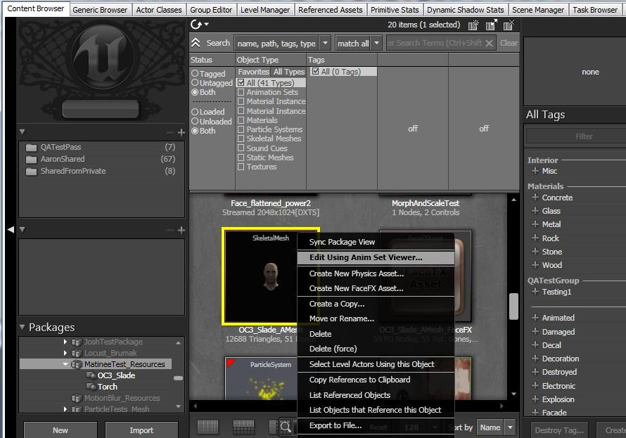
AnimSet Editor (アニメーションセットエディタ) から右側にある "Mesh" メッシュ タブへと移動し、FaceFX のアセットを探し出します。次に [Clear All Text] (すべてのテキストをクリア) のボタンを押します。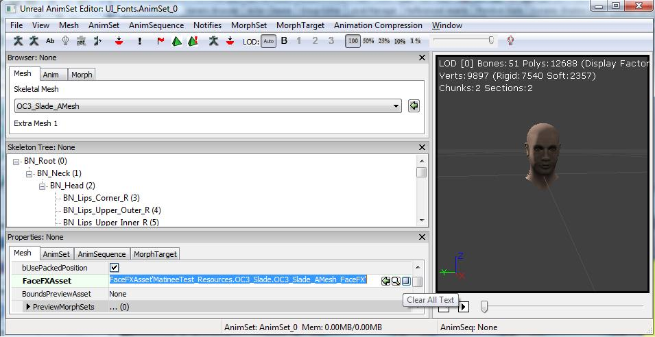
FaceFX アセットを参照する FaceFX アニメーションセットがあるならば、その参照も解除します。そのためには、そのアニメーションセットを右クリックして、プロパティを選択し、DefaultFaceFXAsset フィールドのすべてのテキストを削除します。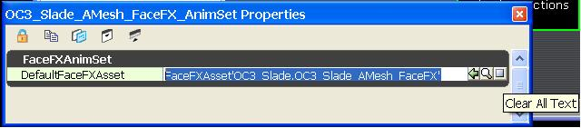
これで、Slade FaceFX アセットを削除できるはずです。UnrealEd のクラッシュの原因となりますので、これを実行する前に、FaceFX スタジオが閉じていることを確認してください。OC3_Slade パッケージの汎用ブラウザで、OC3_Slade_AMesh_FaceFX FaceFX アセットを右クリックして Delete (削除) を選択してください。FaceFX アセットがまだ使用されており、TransBuffer によりリファレンスされているというエラーが表示された場合は、FaceFX アセットを削除を可能にするには、すべてを保存した後にエディタを再起動してください。FaceFX アセットを削除するのに成功したら、パッケージを保存してください。プラグインからの FXA ファイル作成
- 以下に添付している Max もしくは Maya のスレード サンプルファイルを開き、FaceFX のプラグインを起動します。
- FaceFX の Reference Pose の入っているフレームに移動します。ほとんどの場合は、スケルトンがバインドポーズとなります。Slade でフレーム 0 に移動します。
- 調整に FaceFX を利用したい骨格をすべて選択します。Slade にすべての骨格を選択します。プラグインの参照ポーズのセクションにある [エクスポート] ボタンをクリックして参照ポーズをエクスポートします。
- [Batch Export] (バッチエクスポート) をクリックして、Slade のポーズをバッチ処理でエクスポートします。
- 以下に添付している Slade-Batch-Export.txt ファイルを選択します。
- FXA ファイルを保存します。
役に立つリンク
UnrealEd のセットアップ
UnrealEd で FaceFX のアセットを作成する
次に、Slade の骨格メッシュのための新規 FaceFX アセットを OC3_Slade パッケージで作成します。Slade の SkeletalMesh で右クリックして [Create New FaceFX Asset] (新規 FaceFX アセットの作成)を選択します。Max をご利用の場合は、OC3_Slade パッケージにある SkeletalMesh を利用できませんので、自分で作成する必要があります。テクスチャはいずれも同じです。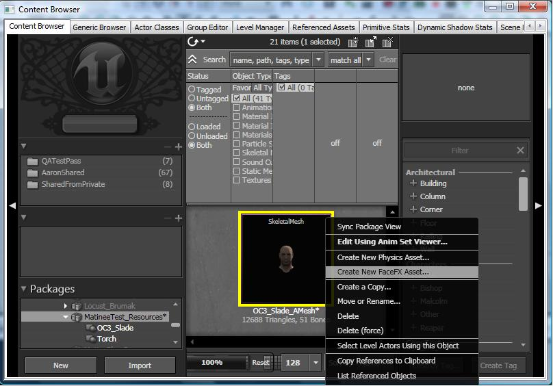
FXA ファイルを UnrealEd にインポートする
続いて、Max もしくは Maya のプラグインで先ほど作成した FXA ファイルをインポートします。新しく作成された FaceFX アセットを右クリックして "Import from .FXA" を選択します。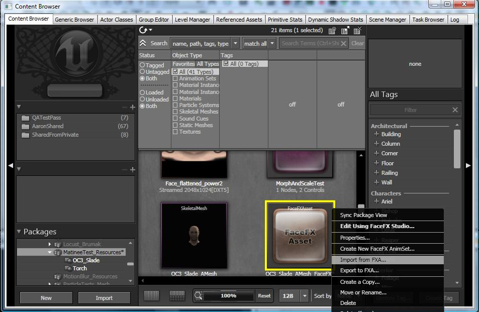
UnrealEd から FaceFX を起動する
いよいよ UnrealEd 内の FaceFX スタジオを起動します。FaceFX アセットを右クリックして"FaceFX Studio"を選択します。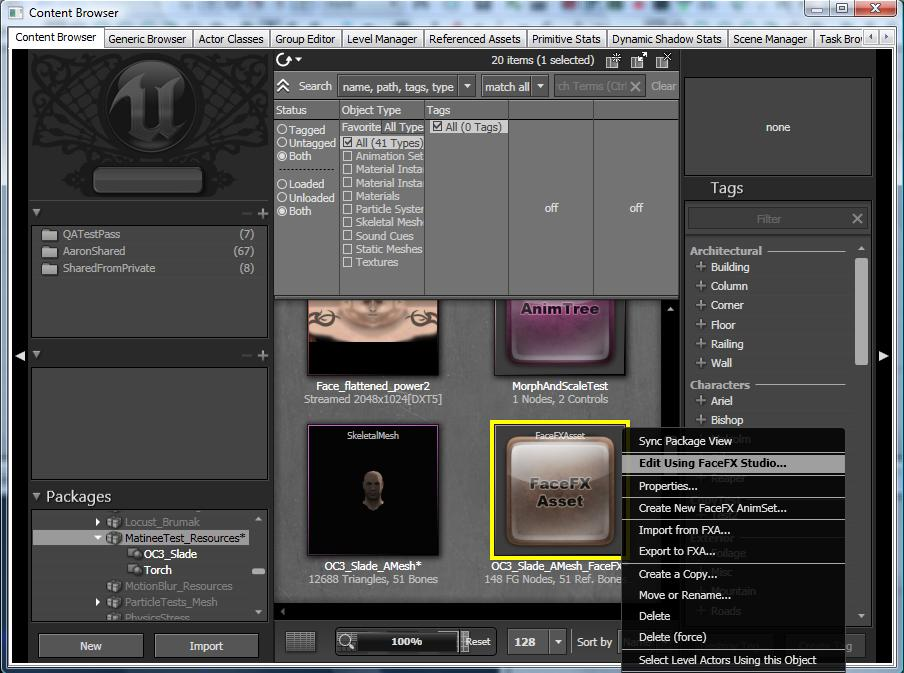
FaceFX での操作
マッピングの作成
FaceFX マッピングのタブに移動します。Slade はデフォルトのマッピングを使用するので、[New Default Mapping] (新規 Default Mapping) ボタンをマッピングタブの一番上でクリックするだけで充分です。特段の音素が認識されたらマッピングから FaceFX に作成するカーブが通知されます。さまざまな種類のマッピング作成が可能ですが、デフォルトマッピングにはキャラクターの唇や舌をリアルに動かせるようポーズが豊富に用意されており、ターゲットに基づく優れたマッピングサンプルになっています。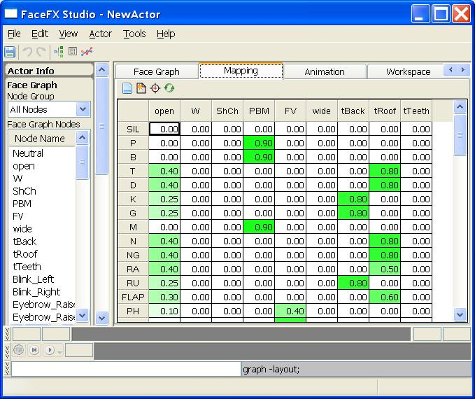
Face Graph のセットアップ
Face Graph のタブを見ると、Max や Maya からエクスポートされた骨格ポーズのリストがあります。Max や Maya からエクスポートされた骨格ポーズには、デフォルトマッピングのターゲットと同じ名前のものもあります。FaceFX のオーディオファイルを解析して、こうしたターゲット用のカーブを作成し、Slade の WAV ファイルにあわせた口の動きを生成します。一方、Face Graph は非常に複雑な関係を構築することが可能なので、Face Graph のノードとリンクのコンバイナを新規作成すると、非常に複雑な動きが可能になり、アニメーションの幅が広がります。Slade のサンプル Face Graph セットアップを立ち上げるには、以下に添付してあるバッチスクリプトの Slade-Face-Graph-Setup.fxl を実行します。このスクリプトから、Face Graph のセットアップに必要なすべてのコマンドが送り出されます。このファイルをディレクトリ C:\ にコピーするだけで、FaceFX のコマンドラインから以下のようなコマンドが送り出されます。: exec -f "C:\Slade-Face-Graph-Setup.fxl"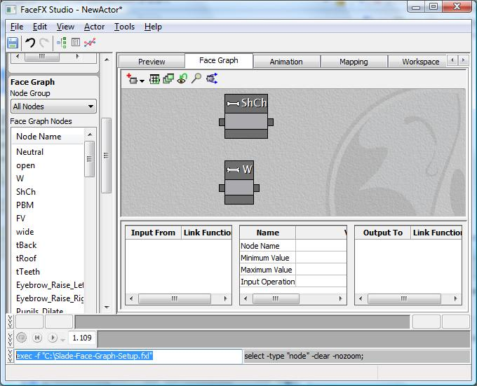
さて、コンソールタブに移動すると、バッチスクリプトのコマンドのうち実行済みでコンソールタブに記録されたものすべてが表示されています。コンソールタブに表示されているのはごく最近実行されたコマンドのみのため、セッションの全記録を参照する場合はファイル Binaries\FaceFX\Logs\FaceFxStudioLog.html をご覧下さい。このファイルはデバッグ時に非常に役立つため、FaceFX の利用で何らかの問題が起こった場合は、記録を残しておくために、このログファイルをリネームして保存してから FaceFX を再起動することをお勧めします。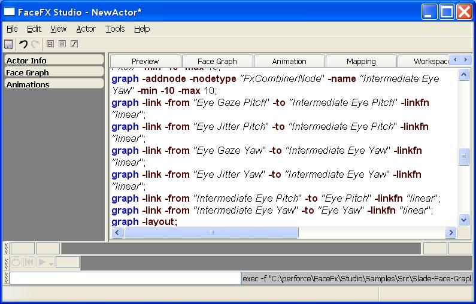
Slade の Face Graph の別のセットアップ方法として、テンプレート ファイル (*.FXT) に同期する方法もあります。テンプレートは、1 つのアクタから別のアクタへの Face Graph、ノード グループ、マッピング、カメラ (まだサポートされていません)、作業空間情報のコピーを可能にします。アクタ メニューの FaceFX から、テンプレート ファイルをエクスポートしたりインポートしたりすることができます。アニメーションの生成
これで Slade のアニメーションを作成する用意が整いました。Face Graph はマッピングのターゲットに関する値を受け取るだけでなく、ある言葉を強調するために Slade の頭を回転させたり瞬きや眉のカーブを作成したりします。Slade の Face Graph の複雑な仕組みのほとんどは、頭を動かしたときに Slade のまぶたや目がリアルに動かすためのデザインに費やされています。 アニメーションを作成するには、まずサウンドアセットや UnrealEd に解析したいサウンドキューをインポートします。ウェルカム サウンドファイルは OC3_Slade パッケージに既にあるので、これを例として解析してみましょう。OC3_Slade パッケージのウェルカムキューのアセットを選択すると以下のステップに入ります。続いて FaceFX ブラウザからアプリケーションの一番上にある [AM] （アニメーション マネージャ） のボタンをクリックします。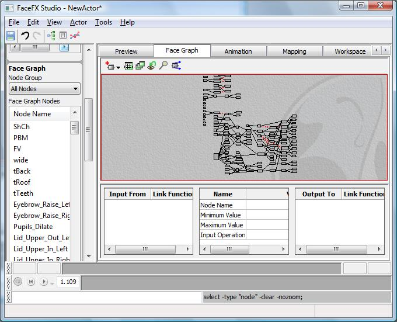
アニメーション マネージャから、一番下の [Create Animation...] (アニメーションの作成) ボタンをクリックします。ウィザードへのステップは次のようになります。- FaceFX でアニメーションのカーブを自動生成する場合、ウィザードの最初のページで選択されているデフォルトを外します。アニメーションをゼロから始めるには、[Do not generate curves] (カーブを生成しない)を選択し、オプションでオーディオファイルをインポートします。音のないアニメーションについては、"Use Sound Cue"(サウンドキューを使う) のチェックボックスをチェックしないままにしておきます。
- アニメーション作成の開始前に選択しておいた welcomeCue サウンドのアセットが既に選択されていることを確認して、[Next] (次へ) をクリックします。
- welcomeCue にはウェルカム サウンドファイルのみが存在し、選択済みになっているはずです。[次へ] をクリックして進みます。
- FaceFX によるオーディオの適切な解析を可能にする英語のテキストファイルを指定します。テキストファイルで「テキストタグ」を使って Face Graph のほかのノードを動かす必要のある特定の単語に動きのあったカーブを生成します。["Gaze Left and Right"] (左右を見回す) ために、スピーチのターゲット、瞬き、眉、そして頭の動きのカーブに加えて必要なカーブを、以下のテキストを使って追加します。
- Face Ef Ex スタジオへようこそ。アニメーショングループを [左右を見回す v2= -1 v3=-1 easein=.5 easeout=.5] から、左側にある追加のサンプルアニメーションのアクタパネル [/"Gaze Left and Right"] へと変更します。
- 次のダイアログでは、利用したい同時調音やジェスチャーの設定ファイルに基づいて解析する言語を選択します。こうした設定ファイルは Binaries\FaceFX\Configs のディレクトリにあります。デフォルト設定のまま [次へ] をクリックします。
- アニメーションに名前をつけ、[Finish] (終了)をクリックすれば完了です。
アニメーションのプレビュー
これでアニメーションが読み込まれた状態になっているので、プレビュータブから見ることができます。プレビュータブには、アニメーション、コンバイナ、もしくはマッピングのいずれかのモードでの調整スライダーを右側に備えた UE3 のビューポートがあります。アニメーションを見るには、左側のアクタパネルにある "Animations" のドロップダウンから選択します。追加されたテキストタグの影響で、Slade が頭を動かしてアクタパネルを見ていることが分かります。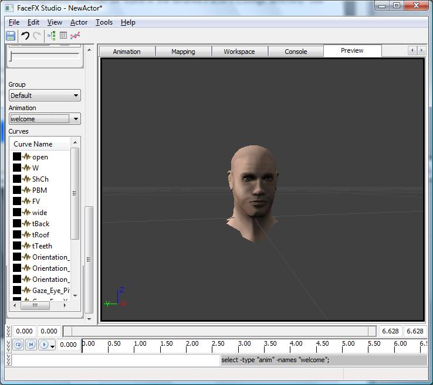
カーブのプロパティ
アクタパネルにあるアニメーションのドロップダウンでは、 "Gaze_Left_and_Right" (左右を見回す) のカーブ以外のすべてのアニメーションのカーブに波形アイコンがあります。この波形アイコンのあるカーブは「解析に依存」していて、右クリックでプロパティを変更して「ユーザに依存」としなければ、カーブエディタやスライダーでの編集はできません。「解析に依存」したカーブは音素バーの音素を動かすたびに再作成されます。
アニメーションの管理/移動
FaceFXAsset 直下に存在するアニメーションは、違うレベルのものであっても、常に読み込まれます。従って、最善の方法はたくさんの FaceFX AnimSets を作成することです (例：各 matinee に 1 つ、各レベルのダイアログに 1 つなど)。その後 Kismet アクションを介して、マウントすることができます。 新しいアニメーションセットにアニメーションを移動する方法：- FaceFX アセットを右クリックして以下を選択します："Create new FaceFX AnimSet (新しい FaceFX AnimSet を作成)" (これで、この AnimSet を FaceFXAsset にリンクします。)
- 新しい FaceFX AnimSet を開きます。
- Actor (アクタ) -> Animation Manager (アニメーション マネージャー)
- これでドロップ ダウンに、作成したグループが表示されるはずです。
- 新しいグループを Secondary Pane (セカンダリー ペイン) に入れます。
- アニメーションを移動したいグループから Primary pane (プライマリー ペイン) に入れます。
- アニメーションを選択し、Move (移動) ボタンをクリックして移動させます。
- たくさんのアニメーションを移動する場合は時間がかかります (例：1000 ～ 2000 個の場合はそれなりに時間がかかります)。
詳細情報
- UE3 版 FaceFX では UE3 のビューポートを利用するため、FaceFX サンプルのレンダリングエンジンや FXR ファイル形式は利用しません。
- UE3 版では、オーディオ、音素リスト、およびその他を保存するための FXS ファイルを出力しません。こうしたデータはすべて、UE3 パッケージシステムに統合された FaceFX アセットに保存されます。
- UE3 版の FaceFX では、標準の FxCombinerNode、FxBonePoseNode、FxDeltaNode、そして FxCurrentTimeNode に加えて、Unreal のカスタム ノードタイプも利用されます。この Unreal のカスタムノードタイプは FUnrealFaceFXMorphNode と FUnrealFaceFXMaterialParameterNode です。これらのノードの利用方法については、FaceFX のより上級向けのテュートリアルを参照して下さい。
ダウンロード
- SladeSampleContent.zip: SladeSampleContent.zip
- FaceFX_Documentation.zip: FaceFX 1.7.3.1 のドキュメンテーション
- FaceFX.chm: FaceFX 1.7.3.1 のドキュメンテーション
- FaceFX_Eyes_Tutorial_DivX.avi: Face Graph の実演動画チュートリアル